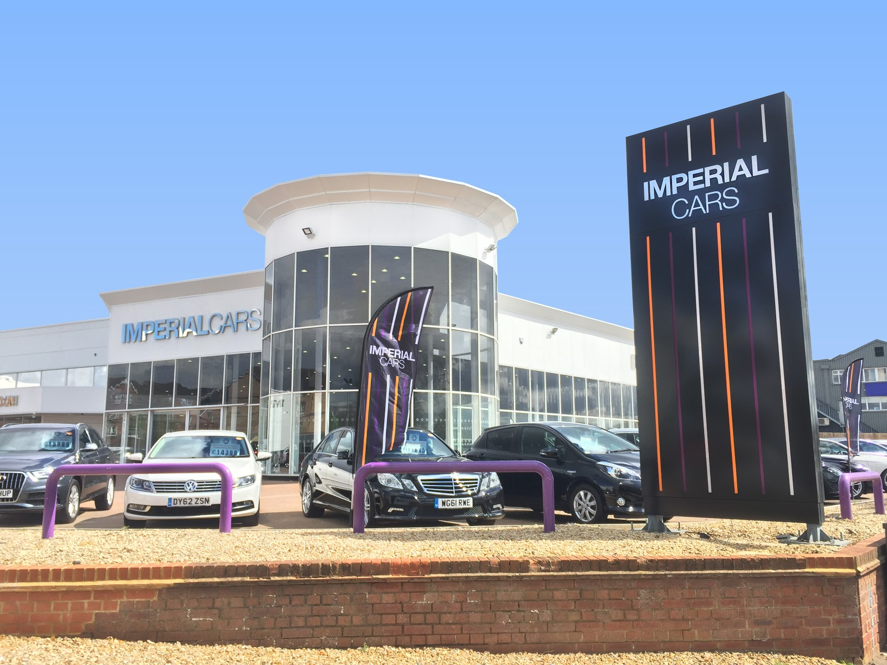

Hi, I'm Natalie and for our first web assignment we have been asked to build a portfolio. In order for there to be some content on my home page (and so all my pages can have the same overall layout) I have decided to do a brief photo timeline of my 34 years prior to university.
My life

1986 the year I was born

2005 I moved to Cyprus

I worked for the boats

Whilst there I rescued animals

For the four months a year (off season) I went travelling

2013 I moved back to England

I worked for Imperial Cars

Bought a house

In 2019 I had a lovely baby boy called Donnie

I did a years access course at Bedford College

Started Northampton Uni in 2020

Now whilst studying I am expecting my second child, due in June